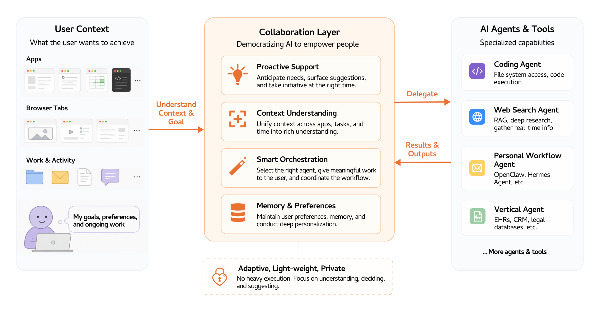
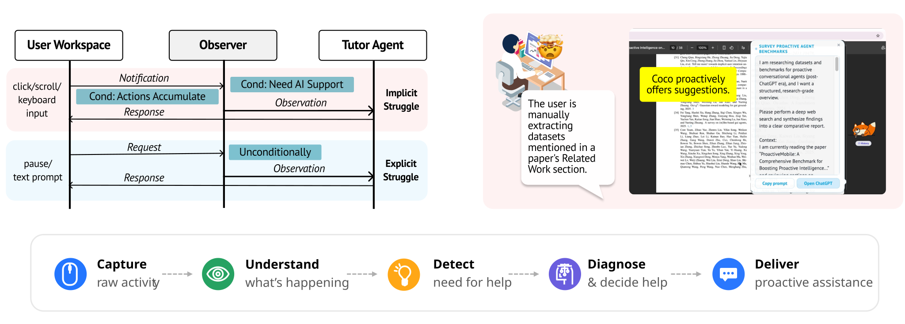
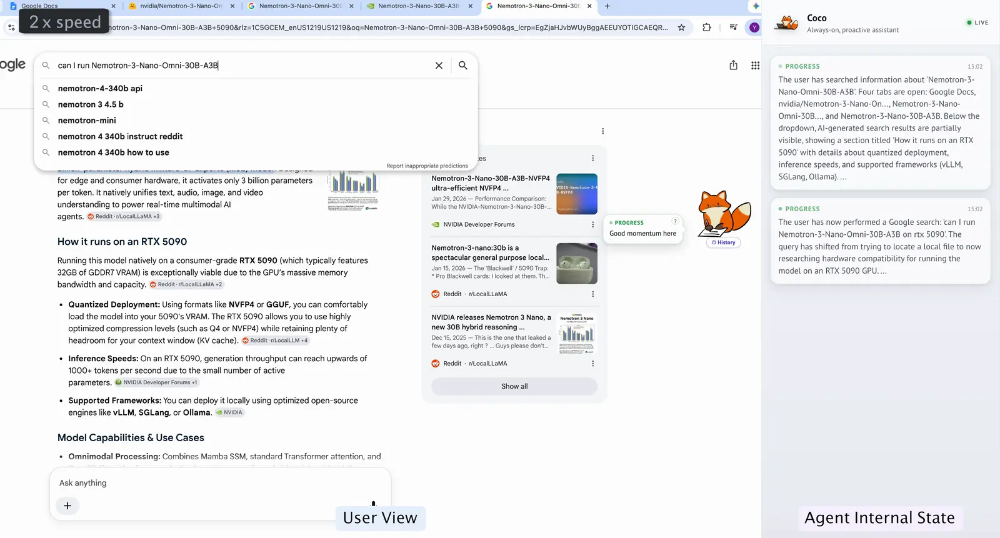

The next frontier is not building more agents, but building a collaboration layer between humans and the AI agents they work with.
For most of computing history, the relationship between humans and machines was unambiguous: the human decided, and the computer executed. Yet people have long envisioned computers not as mere tools but as genuine counterparts, “serving not just secretaries, but cooperative partners and coaches” (Nass, Fogg & Moon, 1996). That vision, articulated thirty years ago, becomes more tangible today: recent advances in large language models have produced systems trained on more text than any human could read in a lifetime, and AI agents that now match or exceed human experts in certain domains.
This shift in what machines can do demands a corresponding shift in how we design systems for humans and AI to work together. Over the past few years, models have been trained to better align with human preferences (Ouyang et al., 2022) and to sustain coherent multi-turn interactions (TML interaction models), making collaboration feel meaningfully smoother. Yet this progress, while substantial, leaves the deeper problem untouched. Efficiency — helping people complete tasks faster — is not the ceiling worth aiming for. The deeper aspiration is growth: helping people achieve what they did not know they could attempt.
Despite rapid advances in model capability, working effectively with AI agents remains harder than it should be. Over the last two years, we have observed the following recurring pain points in our own research and beyond.
What would it take to bridge that gap systematically? We argue that the next frontier is not building more agents, but building a collaboration layer — a lightweight coordination substrate that sits between the human and the expanding ecosystem of AI agents they might work with.

By sitting between the user's workspace and existing AI tools, the collaboration layer ingests signals from a broader stream of the user's work and activity over time. From these signals, it builds a unified understanding of what the user is trying to achieve, and that understanding drives four core capabilities: proactive support, which anticipates needs and surfaces suggestions before the user has to ask; context understanding, which unifies signals across apps, tasks, and time into a coherent picture of intent; smart orchestration, which selects the right downstream agent, scopes the work appropriately, or nudges the user to work on certain parts themselves; and memory and preferences, which maintains a persistent, personalized model of how a particular user works. The collaboration layer is deliberately decoupled from heavy execution workload to ensure it can be adaptive, lightweight, and private.
As a first step toward this vision, we introduce Coco (Proactive Co-Assistant Through Continuous Context Observation), an open-source desktop application that focuses on the proactive support component of the collaboration layer. Coco quietly observes the user's computer-use context — browsing, reading, and editing activity across applications — and steps in with targeted assistance at the right moment: a ready-to-send prompt when it detects repetitive work, a synthesized summary inferred from browsing intent, or concrete questions to help a user navigate unfamiliar territory.
It runs fully on the user's machine with no telemetry or cloud storage of personal data, demonstrating that meaningful proactive assistance does not require sacrificing privacy. Coco does not execute tasks itself, but bridges the gap between a user's unspoken needs and the agents best positioned to address them.

As AI agents grow more capable, a narrow focus on existing tasks and efficiency risks making humans feel increasingly peripheral. But if we believe AI is as transformative as the invention of the computer, the right measure of success is not only how much work agents can do for people, but also how much more people can do because of them. Agents with broad knowledge and general reasoning ability are uniquely positioned to help people venture beyond their current competencies: to attempt problems they have never framed, acquire skills they never imagined, and explore fields adjacent to their own. Realizing this potential, however, requires scaffolding that actively draws people into new territory rather than simply completing tasks on their behalf.
Every person operates with a horizon of familiar domains and a much larger territory of unknown unknowns. In our earlier work on building deep research agents, we found that one promising direction for scaffolding users into the unknown is to proactively engage them in the agent's work rather than simply presenting search outcomes (Jiang et al., 2024). The collaboration layer extends this insight into everyday computer use. For instance, when Coco observes that a user is working on an interdisciplinary project at the intersection of AI and hardware but appears to have limited background in the hardware side, it proactively surfaces key concepts and questions worth exploring.

This also reconnects with an early vision of agents that reduce work and information overload (Maes, 1994). Ironically, as our pain points illustrate, today's AI agents can exacerbate information overload, particularly for non-technical users. The collaboration layer addresses this missing piece of infrastructure. It works toward an AI future in which the benefits of capable AI systems are not gated on technical sophistication or any particular agent provider — one in which the relationship between humans and their AI tools is genuinely collaborative rather than merely convenient.
In this piece, we introduce a vision for a collaboration layer that sits between the user's workspace and the broader ecosystem of AI tools, with the goal of democratizing AI to empower people across domains and skill levels. We have also open-sourced Coco, a first instantiation of that vision focused on proactive co-assistance. The initial release carries several limitations that we are actively working to address.
We would love to hear your thoughts, feedback, and ideas. Reach out at shaoyj@stanford.edu, or open an issue on the Coco GitHub repository.